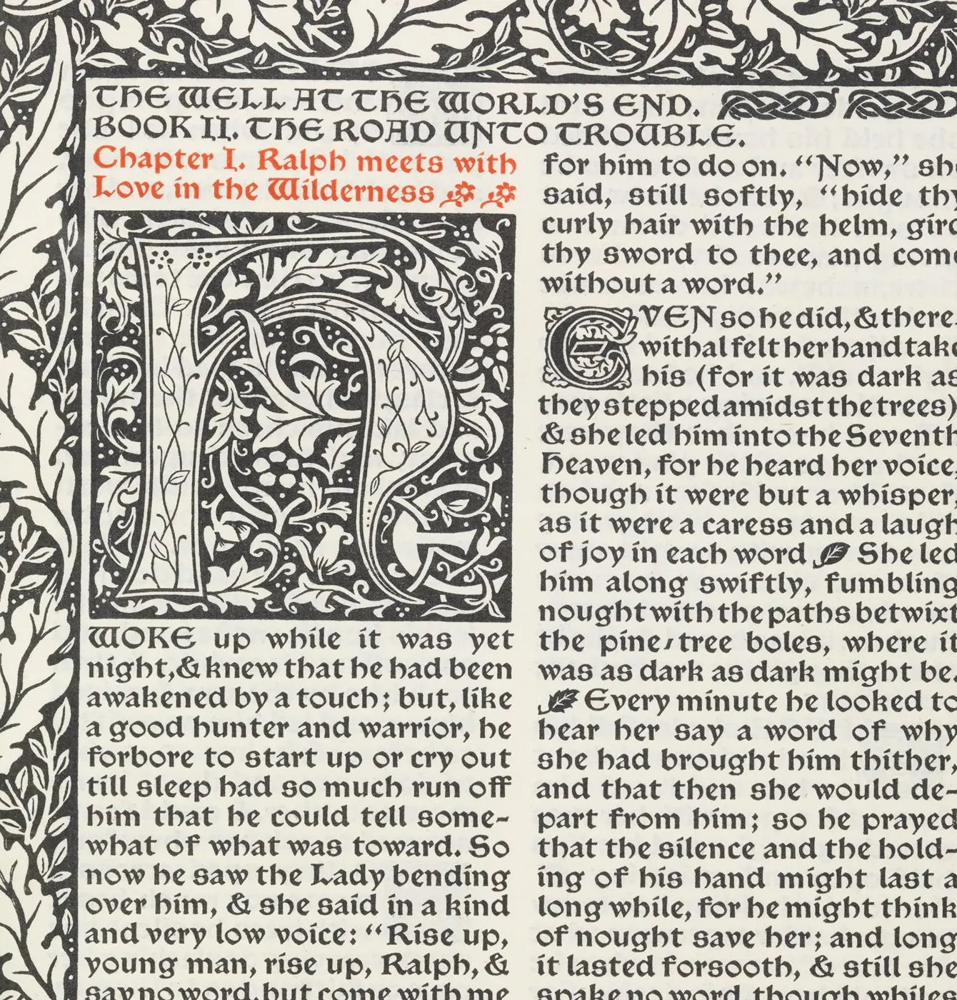

자간과 커닝
가게 간판을 멀리서 보면 어떤 글자 둘은 붙어 있고 어떤 글자는 혼자 떨어져 있는 것처럼 보일 때가 있다. 자로 재면 글자 사이가 똑같은데도 그렇다. 눈은 글자와 글자 사이의 거리가 아니라 그 사이에 고인 빈 면적을 본다. 이 장은 글줄 전체의 간격을 한꺼번에 조절하는 트래킹과, 짝마다 간격을 따로 고치는 커닝을 손으로 끌어 보며 익힌다. 그리고 한글의 자간이 라틴 글자와 어떻게 다른지, 글자가 커지고 작아질 때 간격이 왜 달라져야 하는지를 본다.
- 같은 거리의 글자 사이가 고르지 않아 보이는 이유를 빈 면적으로 설명한다.
- 글줄의 회색값과 리듬을 흐리게 보기로 판단하고, 낱말 사이와 글자 사이의 비율을 읽는다.
- 트래킹과 커닝, 사이드베어링을 구별하고, 1/1000 em 단위로 간격을 적는다.
- 메트릭 커닝과 옵티컬 커닝의 차이와 한계를 안다.
- 한글의 자간이 성겨 보이는 이유를 글자 몸과 받침으로 설명하고, 크기에 따라 자간을 바꾼다.
고르게 보이는 사이
아래 그림의 위 줄은 글자의 바깥 테두리끼리 거리를 모두 똑같이 맞췄다. 그런데 둥근 O 둘 사이와 비스듬한 A와 V 사이는 곧은 H 둘 사이보다 훨씬 넓어 보인다. 아래 줄은 거리를 일부러 다르게 했다. 이번에는 사이가 대체로 고르게 보인다.
글자 사이의 간격을 다루는 일을 우리말로는 흔히 통틀어 자간(Letter spacing)이라고 부른다. 글자와 글자 사이의 거리라는 뜻이다. 디자이너들은 이것을 두 가지 손질로 나눈다. 글줄 전체의 간격을 한꺼번에 넓히거나 좁히는 트래킹, 그리고 특정한 두 글자 짝의 간격만 고치는 커닝이다. 둘 다 목표는 하나다. 읽는 사람이 글자 사이를 의식하지 않도록, 사이가 고르게 보이게 만드는 것이다.
이 장에서 "고르게"는 감각의 말이지만, 그 감각에는 꽤 분명한 규칙이 있다. 곧은 획끼리 마주 보면 사이가 좁아 보이고, 둥근 획이나 비스듬한 획이 마주 보면 위아래로 빈 곳이 생겨 넓어 보인다. 그래서 글꼴 디자이너는 H 같은 곧은 글자의 양옆에는 여백을 넉넉히, O 같은 둥근 글자의 양옆에는 조금 덜 둔다. 이 책의 시뮬레이터는 이 감각을 "글자 사이에 고인 빈 면적"이라는 단순한 모형으로 흉내 낸다. 모형은 출발점이고, 마지막 판단은 언제나 눈이 한다.
리듬과 회색값
글자 사이를 판단하는 가장 오래된 방법은 흐리게 보기다. 눈을 가늘게 뜨거나 지면을 멀리 두고 보면 낱낱의 글자는 사라지고 글줄이 회색 띠로 보인다. 타이포그래퍼들은 이 띠의 짙기와 고르기를 회색값(Typographic color)이라고 부른다. 글자를 짠 면이 얼마나 짙고 얼마나 고르게 보이는지를 가리키는 말이다. 사이가 고르면 회색이 고르고, 어떤 짝이 붙거나 벌어지면 그 자리에 짙은 얼룩이나 흰 구멍이 생긴다.
회색값과 함께 보는 것이 리듬이다. 획과 빈 곳이 번갈아 오는 박자가 일정하면 눈은 글줄을 따라 편안히 미끄러진다. 아래 시뮬레이터에서 트래킹을 움직여 같은 문단의 회색과 리듬이 어떻게 변하는지 본다. "흐리게 보기"를 켜면 실눈 뜨고 보는 것과 비슷해진다.
글줄의 회색
세 번째 해볼 것이 이 장의 첫 교훈이다. 낱말을 묶어 주는 것은 글자 사이보다 확실히 넓은 낱말 사이다. 트래킹을 키우면 글자 사이는 넓어지지만 낱말 사이는 그만큼 넓어지지 않으니 둘의 비율이 줄어든다. 비율이 어느 선 아래로 떨어지면 눈은 어디서 낱말이 끝나는지 찾느라 애쓴다. 반대로 트래킹을 지나치게 줄이면 글자끼리 닿아 획이 엉기고, 회색이 짙어지면서 얼룩진다. 회색값이 고른 구간은 생각보다 넓지 않다.
트래킹과 글자 옆 여백
디지털 글꼴의 모든 글자는 보이지 않는 상자 안에 들어 있다. 상자의 폭을 글자 폭(Advance width)이라고 하고, 글자를 하나 찍으면 다음 글자는 그 폭만큼 오른쪽에서 시작한다. 상자 안에서 잉크와 상자 테두리 사이에 남긴 여백을 사이드베어링(Sidebearing)이라고 한다. 글꼴 디자이너가 글자마다 정해 두는 왼쪽·오른쪽 옆 여백이다. 두 글자 사이에 보이는 빈 거리는 앞 글자의 오른쪽 여백과 뒤 글자의 왼쪽 여백을 더한 것이다.
그러므로 두 글자 사이의 빈 거리는 다음과 같이 쓸 수 있다.
트래킹(Tracking)은 위 식의 \(t\)다. 고른 글줄 전체에 같은 양을 더하거나 빼서 간격을 한꺼번에 넓히거나 좁힌다. 웹의 CSS에서는 letter-spacing이 이 일을 한다. 단위는 보통 글자 크기에 대한 비율로 적는다. 1 em(Em)은 그 글자의 크기 하나(16px 글자라면 16px)이고, 조판 프로그램들은 트래킹을 1/1000 em 단위로 적는다. 그래서 "트래킹 −20"은 글자 크기의 2%만큼 좁힌다는 뜻이고, CSS로는 letter-spacing: -0.02em이다. 픽셀이 아니라 em으로 적어 두면 글자 크기를 바꿔도 비율이 그대로 따라간다.
트래킹은 짝을 가리지 않으므로 글자 사이를 고르게 만들지는 못한다. 이미 고르지 않은 짝은 함께 넓어지거나 좁아질 뿐이다. 트래킹이 하는 일은 글줄 전체의 밀도, 곧 회색값을 정하는 것이다. 짝마다 다른 불균형을 고치는 일은 커닝의 몫이다.
커닝: 짝마다 다른 사이
커닝(Kerning)은 위 식의 \(k_{AB}\)다. 특정한 두 글자의 짝에만 간격을 더하거나 빼서, 사이드베어링만으로는 고르게 되지 않는 짝을 고친다. 대표적인 것이 A와 V, T와 o, L과 T처럼 한쪽이 비스듬하거나 팔을 뻗은 짝이다. 금속 활자 시절에는 글자의 일부가 몸 밖으로 튀어나오게 깎아 옆 글자 위로 걸치게 했는데, 그 튀어나온 부분을 영어로 kern이라 불렀다. 지금의 커닝이라는 말이 여기서 왔다.
아래에서 직접 커닝을 해 본다. 낱말의 둘째 글자부터 아래에 손잡이가 있다. 손잡이를 좌우로 끌면 그 글자와 뒤의 글자들이 함께 움직인다. 연한 초록은 글자 사이에 고인 빈 면적이다(대문자 높이 안에서, 일정한 깊이까지만 센다). 목표는 초록 면적이 모든 짝에서 비슷해 보이게 하는 것이다.
손으로 하는 커닝
모델로 맞춘 결과와 눈으로 맞춘 결과를 견주어 보면, 대부분의 짝에서 방향은 같지만 양은 조금씩 다르다. 눈은 면적뿐 아니라 획끼리 가장 가까운 거리, 글자의 무게중심, 위아래 빈 곳의 모양까지 함께 본다. 특히 T T, L T처럼 팔이 맞닿는 짝은 면적을 같게 하면 오히려 너무 붙는다. 모델이 무너지는 자리가 바로 눈이 필요한 자리다.
메트릭 커닝과 옵티컬 커닝
글꼴 파일에는 보통 디자이너가 미리 정해 둔 커닝 짝의 목록이 들어 있다. 이 목록대로 간격을 고치는 것을 메트릭 커닝(Metric kerning)이라고 한다. 잘 만든 라틴 글꼴에는 수백에서 수천 개의 짝이 들어 있고, 웹 브라우저도 대개 이 커닝을 켠 채로 글자를 그린다(CSS font-kerning). 반면 옵티컬 커닝(Optical kerning)은 조판 프로그램이 글자 모양을 직접 보고 짝마다 간격을 계산하는 방식이다. 목록에 없는 짝이나, 서로 다른 글꼴을 섞어 쓴 자리, 커닝 정보가 부족한 글꼴에서 쓸모가 있다.
아래 비교에서 경계선을 끌어 왼쪽(커닝 없음)과 오른쪽을 견준다. 오른쪽은 글꼴에 든 메트릭 커닝과 이 책의 면적 모델로 계산한 옵티컬 커닝 중에서 고른다.
커닝 없음과 커닝 있음
메트릭 커닝은 디자이너의 판단이 담긴 값이라 대체로 믿을 만하지만, 목록이 모든 짝을 담지는 못한다. 옵티컬 커닝은 어떤 짝이든 계산하지만, 모양만 보고 판단하므로 디자이너가 일부러 남긴 여유까지 없애 버리기도 한다. 그래서 실무에서는 본문에는 대개 글꼴의 메트릭 커닝을 그대로 쓰고, 제목이나 로고처럼 크게 쓰는 몇 글자는 옵티컬로 출발해 눈으로 한 짝씩 다시 고친다.
한글의 자간
한글 글꼴의 글자는 대부분 같은 폭의 정사각형 상자 안에 그려진다. 금속 활자 시절 한 자 한 자가 같은 크기의 네모난 몸에 새겨졌던 전통이 디지털 글꼴로 이어진 것이다. 이렇게 모든 글자가 같은 폭을 갖는 방식을 전각(Full-width) 조판이라고 부른다. 같은 폭의 몸에 그리니 원고지처럼 글자가 격자에 가지런히 놓이는 장점이 있다. 대신 글자마다 잉크가 차지하는 폭은 다르다. "가"는 오른쪽이 비고, "니"는 가운데가 비고, "꽃"과 "책"은 상자를 거의 꽉 채운다. 그래서 같은 폭으로 놓으면 글자 사이의 빈 면적이 들쭉날쭉하다.
한글 본문이 라틴 본문보다 성겨 보인다는 말도 여기서 나온다. 받침 없는 글자는 아래가, 세로 모음 글자는 옆이 비어 상자 안에 빈 곳이 많다. 특히 화면용 고딕 계열 글꼴은 작은 크기에서 글자끼리 붙지 않도록 여백을 넉넉히 두는 경우가 많아서, 크기가 커질수록 글자가 서로 떨어져 보인다. 한국의 편집 디자인과 웹 실무에서 본문에 약간의 음수 자간(−1~−5% 안팎)을 주는 관습이 퍼진 이유다. 다만 이것은 글꼴마다, 크기마다 다르게 판단할 관습이지 연구로 정해진 값이 아니다.
아래에서 한글 한 줄의 자간을 바꿔 본다. "글자 몸 보기"를 켜면 각 글자의 상자(점선)와 실제 잉크가 차지한 범위(초록 띠)가 함께 보인다. 아래쪽에는 같은 자간으로 짠 본문을 실제 크기(17px)로 보여 준다.
한글 한 줄의 자간
두 번째와 세 번째 해볼 것 사이에 적당한 구간이 있다. 고딕 본문에서는 대체로 약간 줄였을 때 낱말이 묶이고, 지나치게 줄이면 받침과 이웃 글자가 엉긴다. 명조는 같은 값에서도 덜 성겨 보이는 경우가 많다. 무엇보다 한글은 글자 짝마다의 불균형이 라틴보다 크지만, 수천 자의 짝을 모두 커닝하기는 어려워서 대부분의 글꼴이 짝 커닝을 거의 담지 않는다. 대신 글자 상자의 폭 자체를 글자마다 다르게 쓰게 하는 기능(OpenType의 비례 폭 기능 등)을 갖춘 글꼴이 있고, 제목이나 로고에서는 디자이너가 손으로 짝을 고친다.
크기에 따라 달라지는 간격
같은 글꼴, 같은 자간이라도 글자 크기가 바뀌면 사이가 다르게 보인다. 작은 글자는 획과 빈 곳이 모두 작아져 사이가 좁아 보이고, 글자가 서로 엉겨 알아보기 어려워진다. 반대로 큰 글자는 빈 곳이 시원하게 커져서 같은 비율의 여백이 휑하게 보인다. 금속 활자 시절에는 크기마다 활자를 따로 깎았기 때문에, 작은 활자는 글자를 조금 넓게, 사이를 넉넉하게, 큰 활자는 사이를 좁게 만드는 보정이 자연스럽게 들어갔다. 이것을 크기별 보정(Optical sizing)이라고 한다.
디지털 글꼴은 하나의 윤곽을 모든 크기에 늘려 쓰기 때문에 이 보정이 사라졌다. 그래서 디자이너가 트래킹으로 그 일을 대신한다. 작은 글자에는 조금 더하고, 큰 제목에는 뺀다. 요즘은 글자 크기에 따라 모양까지 바꾸는 가변 글꼴의 크기 축도 있다(11장). 아래 시뮬레이터에서 크기별 트래킹 곡선을 직접 만든다. 그래프의 두 손잡이는 12px과 72px에서의 트래킹이다. 둘 사이는 크기의 로그에 대해 직선으로 잇는다.
크기별 트래킹 곡선
곡선의 모양은 글꼴마다 다르다. 처음부터 작은 크기용으로 설계해 여백을 넉넉히 둔 글꼴은 작은 크기에서 더할 필요가 없고, 제목용으로 설계한 글꼴은 큰 크기에서 뺄 필요가 적다. 중요한 것은 크기마다 같은 비율을 고집하지 않는다는 생각이다. 같은 글꼴로 본문과 제목을 함께 짤 때 트래킹을 하나로 두면, 둘 중 하나는 반드시 어색해진다.
작품과 디자인에서: 규칙이 깨질 때
19세기 말 영국의 디자이너 윌리엄 모리스(William Morris, 1834–1896)는 켈름스콧 출판사를 세워 중세 필사본과 초기 인쇄본에서 영감을 얻은 책을 만들었다. 그는 당시 상업 인쇄의 성기고 희멀건 지면을 싫어해서 낱말 사이를 좁게 하고 글자를 짙게 짜, 지면 전체가 고르게 짙은 회색으로 보이기를 바랐다. 아래 그림의 글줄들을 흐리게 보면 그 의도가 보인다. 동시에 대가도 보인다. 양끝을 맞추느라 "so he did", "the trees" 같은 자리에서는 낱말 사이가 거의 사라져 낱말끼리 붙어 읽힌다.

규칙은 반대 방향으로도 깨진다. 대문자만으로 짠 짧은 줄(표지판, 목차의 머리, 작은 표제)은 대문자끼리 각진 획이 서로 가까워 답답해 보이기 쉬워서, 일부러 자간을 넉넉히 띄우는 경우가 많다. 로버트 브링허스트는 『타이포그래피 스타일의 요소』(The Elements of Typographic Style, 1992)에서 대문자와 작은 대문자의 줄은 조금(대략 글자 크기의 5~10%) 띄워 짜라고 권한다. 반대로 소문자 본문을 띄우는 것에는 오래된 반감이 있다. "소문자를 띄우는 사람은 양도 훔칠 사람"이라는 농담이 미국의 활자 디자이너 프레더릭 고디(Frederic Goudy)의 말로 흔히 전해지는데, 실제로 그가 어떤 말을 했는지는 기록이 엇갈린다. 농담이 전하려는 뜻은 소문자는 글자끼리 이어져 낱말의 모양을 이루도록 설계되었으니 띄우면 그 모양이 깨진다는 것이다.
그런데도 소문자를 크게 띄운 좋은 디자인은 많다. 넓게 띄운 소문자는 낱말을 "읽히는 글"이 아니라 "보이는 무늬"로 바꾼다. 짧은 표어, 전시 제목, 앨범 표지처럼 한두 낱말을 오래 바라보게 하려는 자리에서는 그것이 의도다. 반대로 큰 제목을 글자가 닿을 만큼 좁혀 하나의 덩어리로 만드는 것도 흔한 방법이다. 기준은 늘 같다. 이 글이 읽혀야 하는가, 보여야 하는가. 읽혀야 하는 본문에서 회색값을 해치는 자간은 실수이고, 보여야 하는 제목에서는 표현이 된다.
간판 「책방 E」의 사이
이 장의 도구를 모아 간판 하나를 맞춘다. 가로 1.8 m 간판에 "책방 E"를 앉힌다. 글자는 손 레터링 전에 쓸 견본으로 Noto Sans KR Bold를 빌려 쓴다. 맞출 것은 두 가지다. "책"과 "방" 사이(글자 사이), 그리고 "방"과 "E" 사이(낱말 사이). 아래에서 글자 사이의 목표 빈 거리와 낱말 사이의 비율을 정하면, 모델이 그에 맞는 커닝과 간격을 찾는다. 글자 아래 손잡이를 끌어 직접 고칠 수도 있다. "보는 거리"는 간판을 멀리서 볼 때처럼 흐리게 한다.
간판 커닝 작업대
모델이 내놓는 값은 "이 목표라면 이만큼"이라는 계산일 뿐이다. 목표 빈 거리와 낱말 비율을 정하는 것은 디자이너의 판단이다. 멀리서 보는 간판이라면 낱말 사이를 본문보다 넉넉히 두어야 흐려져도 "책방"과 "E"가 둘로 읽힌다. 손 레터링으로 넘어가면 획의 모양이 바뀌니 커닝도 다시 보아야 한다. 이 장의 숫자는 그때 기준으로 쓸 출발점이다.
서윤의 작업 노트
자로는 같았는데 눈으로는 달랐다
간판 시안을 실제 크기로 출력해 책방 앞 골목에 세워 보았다. 서윤은 견본 글꼴의 기본 간격 그대로 "책방 E"를 앉혔는데, 열 걸음쯤 물러서자 "책"과 "방"이 서로 떨어져 보였다. 본문 크기에서는 알맞던 옆 여백이 글자 높이 50 cm 가까운 간판에서는 손바닥만 한 빈 곳이 된 것이다. 주인은 "책방이 두 글자로 갈라져 보인다"고 했다.
도경은 출력물을 거꾸로 돌려 세웠다. "글자도 그림처럼 사이를 봐. 거리 말고 면적." 그러고는 연필로 "책"의 오른쪽 세로획과 "방"의 ㅂ 사이, "방"의 ㅇ 받침과 E 사이에 고인 빈 곳을 칠했다. 서윤은 이 장의 작업대 모델로 두 사이를 쟀다. 글꼴 기본값에서 책|방의 빈 거리는 0.23 em, 방|E는 0.49 em으로, 낱말 사이가 글자 사이의 2.1배였다. 글자 사이가 넓고 낱말 사이는 그에 비해 덜 넓으니, 간판이 "책 / 방 / E" 세 덩어리로 읽힌 것이다.
서윤은 간판을 멀리서 본다는 점을 생각해 글자 사이의 목표를 0.12 em으로 좁히고, 낱말 사이는 그 3배(0.36 em)로 정했다. 30 m 흐림에서도 "책방"과 "E"가 둘로 읽히는 가장 작은 비율을 몇 번 시험한 결과다. 모델로 계산하니 책–방 커닝은 −115(1/1000 em)이고, 방–E 사이의 공백은 기본 0.23 em에서 0.10 em으로 줄이면 되었다. 이 시안 크기(1 em이 약 52 cm, 한글 글자 높이 약 49 cm)로 옮기면 "방"을 약 6 cm 당기고 E는 그보다 약 7 cm 더 당기는 셈이다. 도경은 숫자를 보고 E를 손으로 한 번 더 밀어 보더니 그대로 두자고 했다. "멀리서 보는 글자는 생각보다 많이 붙여야 해."
웹 본문의 자간은 따로 정했다. 4장에서 고른 고딕 계열의 본문을 휴대폰 크기로 놓고 0, −0.02em, −0.04em을 나란히 출력해 흐리게 보았다. 0은 글자가 한 자씩 떨어져 보였고, −0.04em은 "책방", "골목" 같은 받침 많은 낱말에서 획이 엉겼다. 서윤은 −0.02em을 골랐다. 대신 13px 이하의 작은 글자에는 음수 자간을 주지 않기로 했다. 그리고 WCAG 1.4.12대로 독자가 글자 사이를 0.12em까지 넓혀도 줄이 넘치지 않는지 시험 페이지로 확인했다.
| 자리 | 무엇 | 값 | 비고 |
|---|---|---|---|
| 간판 「책방 E」 | 책–방 커닝 | −115 / 1000 em | 책|방 빈 거리 0.23 → 0.12 em |
| 간판 「책방 E」 | 방–E 공백 | 0.10 em | 방|E 빈 거리 0.36 em(글자 사이의 3배) |
| 웹 본문(고딕) | 자간 | −0.02em | −20 / 1000 em |
| 웹의 작은 글자(13px 이하) | 자간 | 0 | 음수 자간을 주지 않는다 |
핵심 정리
- 눈은 글자 사이의 거리가 아니라 빈 면적을 본다. 둥근 글자와 비스듬한 글자는 곧은 글자보다 가깝게 놓아야 사이가 고르게 보인다.
- 흐리게 보면 글줄은 회색 띠가 된다. 사이가 고르면 회색이 고르고, 짝이 붙거나 벌어지면 얼룩과 구멍이 생긴다. 낱말 사이는 글자 사이보다 분명히 넓어야 낱말이 묶인다.
- 두 글자 사이의 빈 거리는 옆 여백(사이드베어링) 둘에 커닝과 트래킹을 더한 값이다. 트래킹은 글줄 전체의 밀도를, 커닝은 짝마다의 불균형을 고친다. 값은 1/1000 em이나 em으로 적는다.
- 메트릭 커닝은 글꼴에 든 디자이너의 짝 목록이고, 옵티컬 커닝은 모양을 보고 계산한다. 계산이 고르다고 해서 더 좋아 보이는 것은 아니며, 큰 글자는 눈으로 다시 고친다.
- 한글 글꼴은 같은 폭의 네모 상자에 글자를 그려서 받침과 모음 모양에 따라 사이가 들쭉날쭉하고, 고딕 본문은 성겨 보이기 쉽다. 약간의 음수 자간은 관습이지 정해진 값이 아니다.
- 작은 글자는 조금 띄우고 큰 글자는 조금 좁힌다. 같은 글꼴이라도 크기마다 같은 자간을 고집하지 않는다.
- 읽혀야 하는 글과 보여야 하는 글은 자간의 기준이 다르다. 넓게 띄운 소문자, 붙여 짠 제목은 규칙을 깨지만 목적에 맞으면 좋은 디자인이다.
확인 퀴즈
1. 대문자로 "HOOD"를 짰더니 두 O 사이가 H와 O 사이보다 넓어 보인다. 글자 테두리 사이의 거리는 모두 같다. 가장 알맞은 설명과 고치는 방향은?
2. 18px 본문에 CSS로 letter-spacing: -0.03em을 주었다. 이에 대한 설명으로 옳은 것은?
3. 한글 고딕 본문이 라틴 본문보다 성겨 보인다는 말이 나오는 주된 이유로 가장 알맞은 것은?
4. 같은 글꼴로 10px 각주와 96px 제목을 짠다. 이 장의 생각에 가장 맞는 자간 처리는?
출처와 글꼴
- W3C, Web Content Accessibility Guidelines (WCAG) 2.1, 성공 기준 1.4.12 Text Spacing(2018).
- Walter Tracy, Letters of Credit: A View of Type Design, Gordon Fraser, 1986. 대문자 H·O, 소문자 n·o를 기준으로 한 여백 맞추기(요약).
- Robert Bringhurst, The Elements of Typographic Style, Hartley & Marks, 1992. 대문자 줄의 자간에 관한 권고(요약).
- "소문자를 띄우는 사람은…"이라는 말은 프레더릭 고디의 말로 널리 전해지지만 출처와 원래 문구가 확인되지 않아 요약으로만 적었다.
- 이 장의 "빈 면적" 모델(각 줄의 잉크 사이 거리를 정해진 깊이까지 세어 평균)은 이 책이 교육용으로 만든 단순화이며, 실제 옵티컬 커닝 알고리즘을 재현한 것이 아니다.
- 그림 3: 메트로폴리탄 미술관 소장 『세상 끝의 우물』(1896), 공공 도메인(CC0).
- 글꼴: Noto Sans KR, Noto Serif KR(Google, Adobe 공동 개발 계열의 한국어 Noto 글꼴), Inter(Rasmus Andersson). 모두 SIL Open Font License 1.1, Google Fonts로 불러온다.